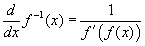
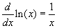
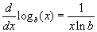
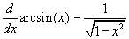
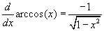
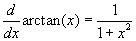
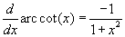
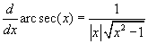
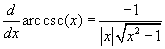

This device cannot display Java animations. The above is a substitute static image
1. A line
The applet shows a line, y = f (x) = 2x and its inverse, y = f -1 (x) = 0.5x. The right-hand graph shows the derivatives of these two functions, which are constant functions. You can move the slider to move the x location of a point on f (x) (the purple graph). The coordinates of the purple point are (x, f (x)). There is also a point on the inverse, but it is the "mirror point" (i.e., the point with the reverse coordinates of the purple point). In other words, the coordinates of the blue point are (f (x), x). The values of the derivatives at these two points are shown in the upper right hand corner of the derivative graph, and are indicated by cross hairs on the derivative graphs. Since the functions are lines, the derivatives are horizontal lines and the derivatives are constant.
What is the relationship between the two derivatives?
2. A second line example
Select the second example from the drop down menu, showing the line, y = f (x) = 3x and its inverse, y = f -1 (x) = (1/3)*x. What is the relationship between the derivatives? You should have noticed that the derivatives at any point are reciprocals of one another.
3. A parabola
Select the third example, showing half of a parabola and its inverse, the square root function. Does the reciprocal relationship still hold between the derivatives? Move the x slider and see if this is true (hint: integer values result in derivatives values that are easier to compute the reciprocals of in your head).
This example also shows the tangent lines to the two points. It is important to note that the value of the derivative of the inverse is being evaluated at a different place than the derivative of the function, as shown by the crosshairs on the derivative graphs. If the derivative of the function is being evaluated at x = a, the derivative of the inverse is being evaluated at x = f (a). This gives us the general formula for the derivative of an invertible function:

This says that the derivative of the inverse of a function equals the reciprocal of the derivative of the function, evaluated at
f (
x).
4. Exponential functions
Select the fourth example. This shows the exponential functions and its inverse, the natural logarithm. The derivative of the inverse (i.e., the derivative of the natural logarithm) is:

Because ln(
x) is only defined for positive
x, its derivative is also only defined for positive
x.
5. Exponential function - base 10
Select the fifth example. This shows an exponential function with base 10 and its inverse, the common logarithm. The derivative of a logarithm to a base other than e is

again with
x > 0.
6. Sine curve
Select the sixth example, showing a sine curve and its inverse, arcsin(x) (which is also written as sin-1(x)). Here, the range of the inverse is limited in order to make it a function, and the x slider is limited to this domain. You can explore the other examples, which show the inverses and derivatives of some of the other trigonometric functions (the graphing software currently doesn't support arccot and arccsc). The derivative of the inverse trigonometric function are:






Explore
You can also explore on your own, but note that you need to enter both the function and its inverse,
as the software is not smart enough to compute the inverse of a function.
Other differentiation topics
(C) 2011 Copyright Math Open Reference.
All rights reserved